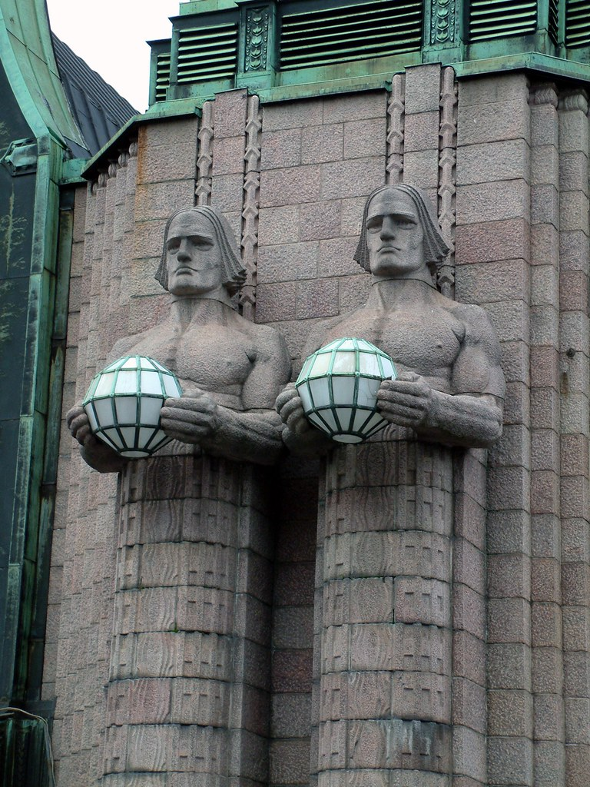
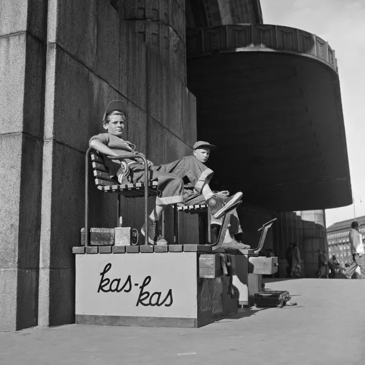

Lyhdynkantajat
Lyhdynkantajat ovat Helsingin päärautatieaseman pääovella sijaitsevia veistoksia. Emil Wikströmin suunnittelemat veistokset valmistuivat vuonna 1914. Lyhdynkantajat ovat osa Eliel Saarisen piirtämän jugend-tyylisen rautatieaseman julkisivua.
Veistosryhmä koostuu neljästä graniittisesta mieshahmosta, jotka kannattelevat pallolamppuja. Jykeväleukaisilla hahmoilla on lihaksikas ylävartalo, mutta niiden alaosana on Saariselle tyypillisellä tavalla kuvioitu pylväselementti. Miesten hiukset on leikattu niin sanotun körttiläisen mallin mukaan. Kerrotaan, että hahmojen mallina oli 1800-luvun lopulla syntynyt torppari Jalmari Lehtinen. Visavuoren puutarhurina palvellut Lehtinen oli toiminut muulloinkin Wikströmin veistosten mallina.

Kaupunkilaisten olohuone
Rautatieaseman ympäristö oli myös saksalaissyntyisen Volker Von Boninin vakiokohteita hänen ikuistaessaan sotien jälkeisten vuosien suomalaista yhteiskuntaa. Tässä kuvassa kengänkiillottajapojat Lyhdynkantajien juurella odottamassa asiakkaita.

Aseman kellotorni
Asemarakennuksen kellotorni kuuluu Helsingin tunnettuihin maamerkkeihin. Se oli valmistuessaan kaupungin korkein torni ja siitä tuli suosittu näköalapaikka, johon myytiin alkuaikoina lippuja. Ensimmäisen maailmansodan aikana Helsingin rautatieaseman toimiessa sotilassairaalana kellotornia käytettiin väliaikaisena ruumishuoneena. Toisen maailmansodan aikaan lotat suorittivat kellotornista käsin Helsingin ilmavalvontaa. Kellotornissa on näköalaparvekkeet joka ilmansuuntaan. Kellotornin alaosan portaat on valmistettu betonista. Yläosan portaat ovat puuta. Nykyään torni ei enää ole yleisölle avoin turvallisuussyistä, lukuun ottamatta kutsuvieraita, kuten Eliel Saarisen jälkeläiset.
Torni kohoaa maanpinnasta mitattuna 48,5 metrin korkeuteen. Sen huipulla on aseman ja rautatien kansainvälisyyttä symboloiva neljän siipipyörän kannattelema pallo. Tornin runkorakenne on muurattua tiiltä, ja julkisivu koostuu noin 3 600 Hangon graniittikiven palasta. Katto on puurunkoinen ja siinä on kuparinen kate. Kellotornin kuparikatto painaa noin viisi tuhatta kiloa, ja sen kokonaispinta-ala on noin 150 m2. Tornin kupolin alareunan halkaisija on noin 4,5 metriä. Graniittijulkisivun pinta-ala on noin 1 030 neliömetriä. Yhden graniittikiven paksuus on keskimäärin 250 milliä ja paino on noin 240 kiloa.